Tentang Proyek
Proyek Assessment Kenaikan Kepala Sekolah SD/MI/SMP dikembangkan untuk mendukung proses seleksi dan promosi jabatan kepala sekolah secara digital dan transparan. Sistem ini mempermudah tim penilai dan peserta dalam proses administrasi, penilaian, serta publikasi hasil seleksi secara daring.
Dengan antarmuka yang modern dan responsif, aplikasi ini menjadi solusi efektif bagi Dinas Pendidikan Kabupaten Gresik dalam mempercepat proses seleksi tanpa mengorbankan akurasi penilaian.
Fitur Utama
- Penilaian Dokumen: Verifikasi dan penilaian berkas administrasi peserta secara digital.
- Penilaian CAT: Sistem ujian berbasis komputer untuk menilai kompetensi akademik dan manajerial.
- Hasil Seleksi: Menampilkan skor akhir, peringkat, dan status kelulusan peserta secara otomatis.
- Daftar Peserta: Monitoring peserta yang mengajukan dengan filter berdasarkan jenjang dan status seleksi.
- Dashboard Admin: Visualisasi data seleksi, jumlah peserta, dan progres penilaian dalam satu tampilan.
Teknologi yang Digunakan
Framework Laravel
HTML
CSS
JavaScript
PHP
MySQL
Preview
 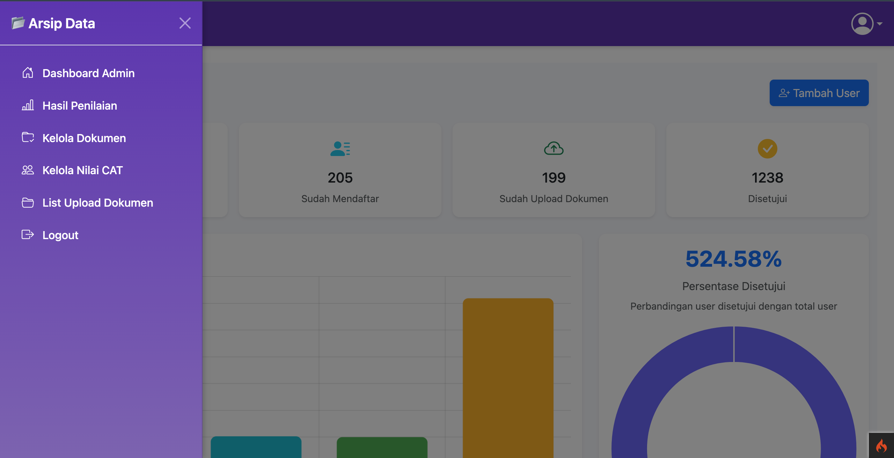
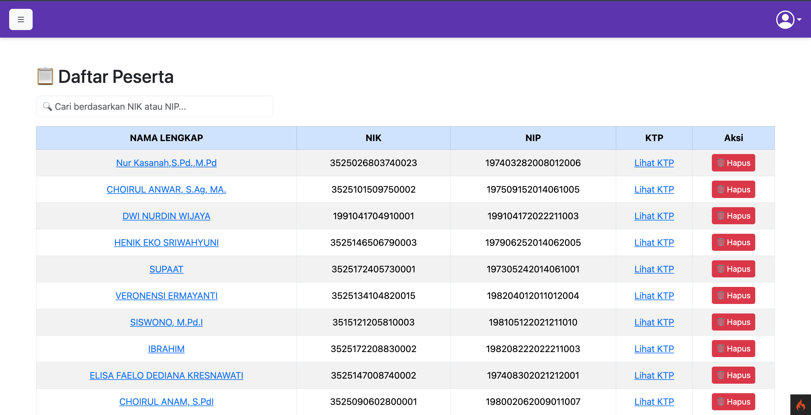
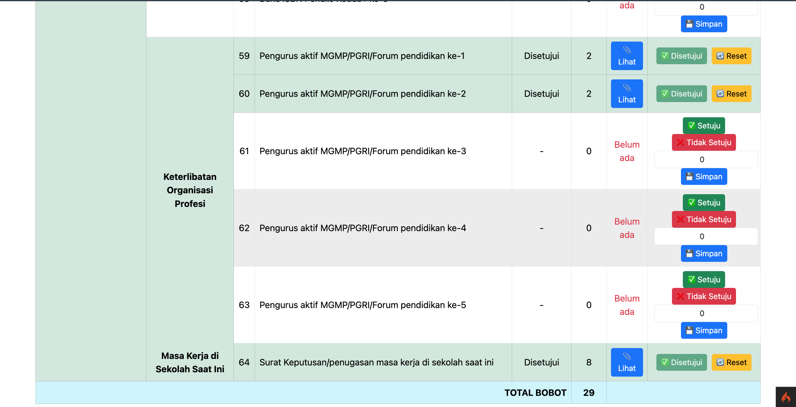
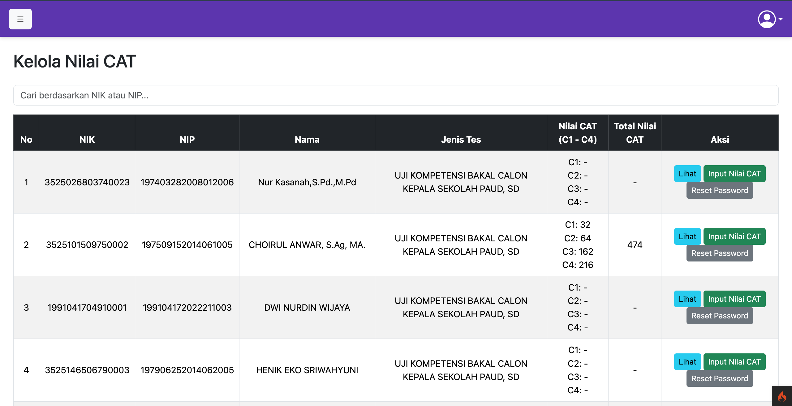
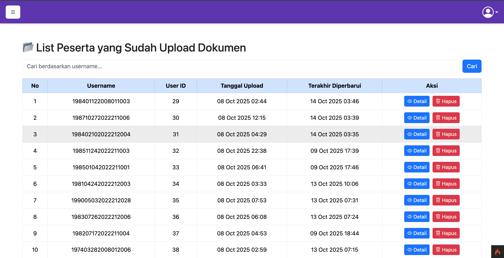
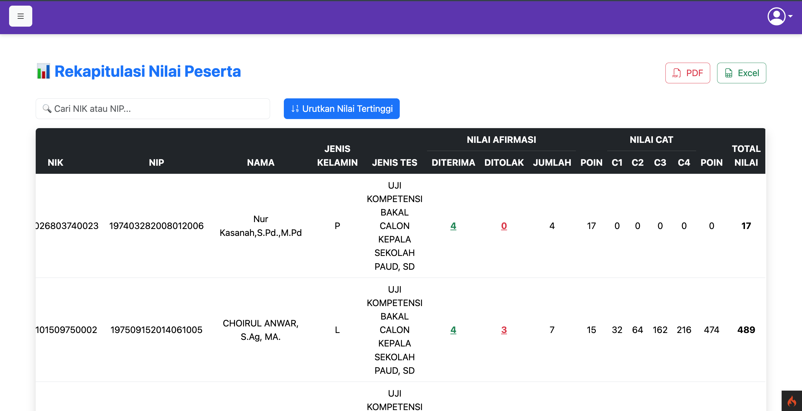
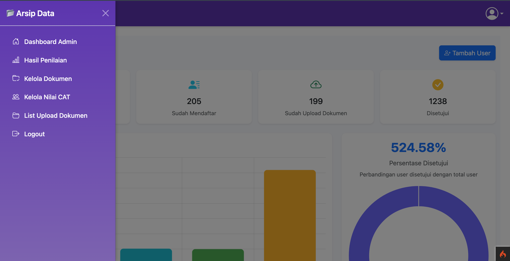
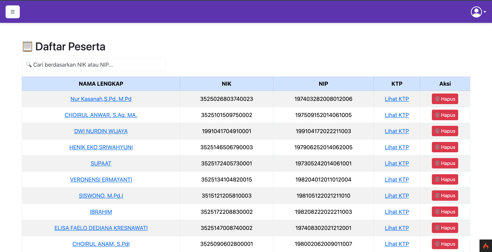
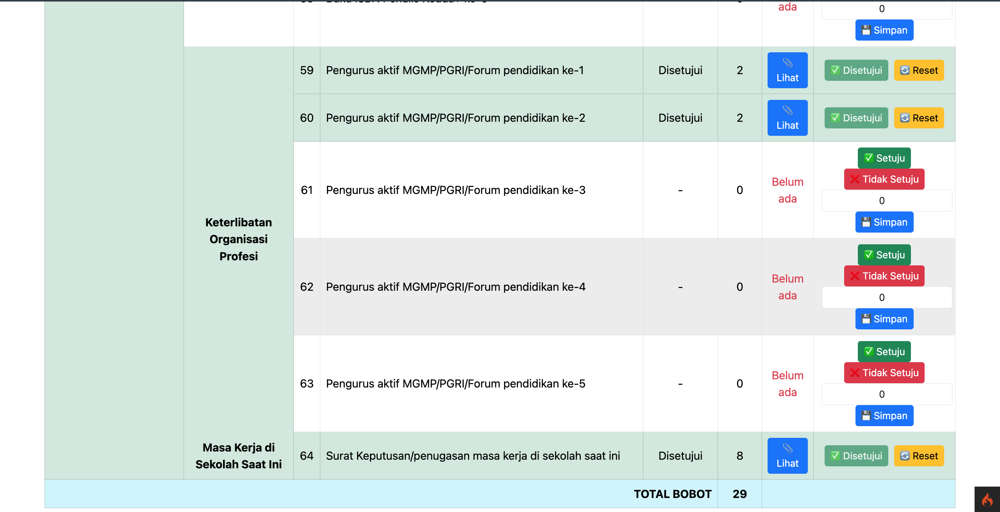
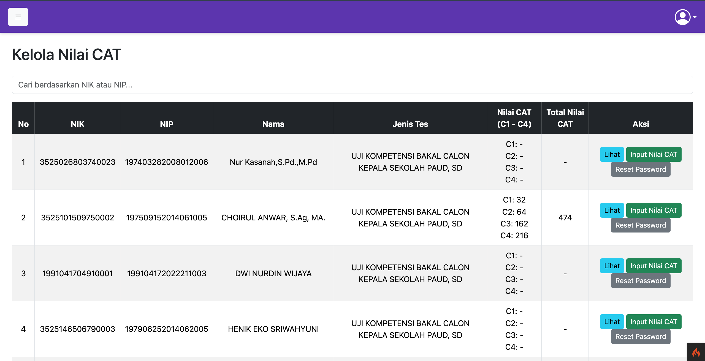
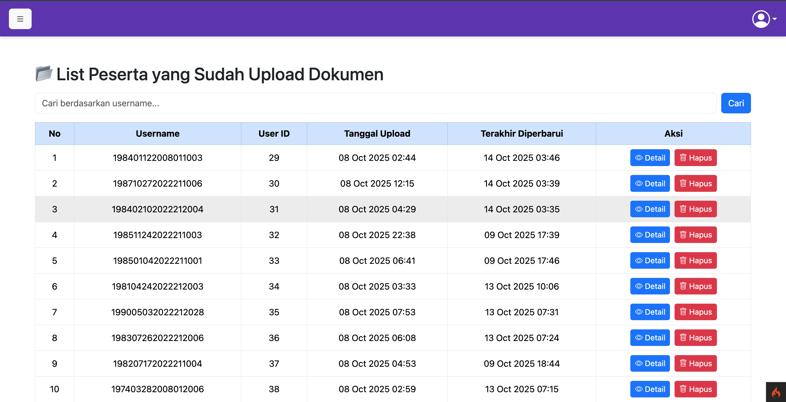
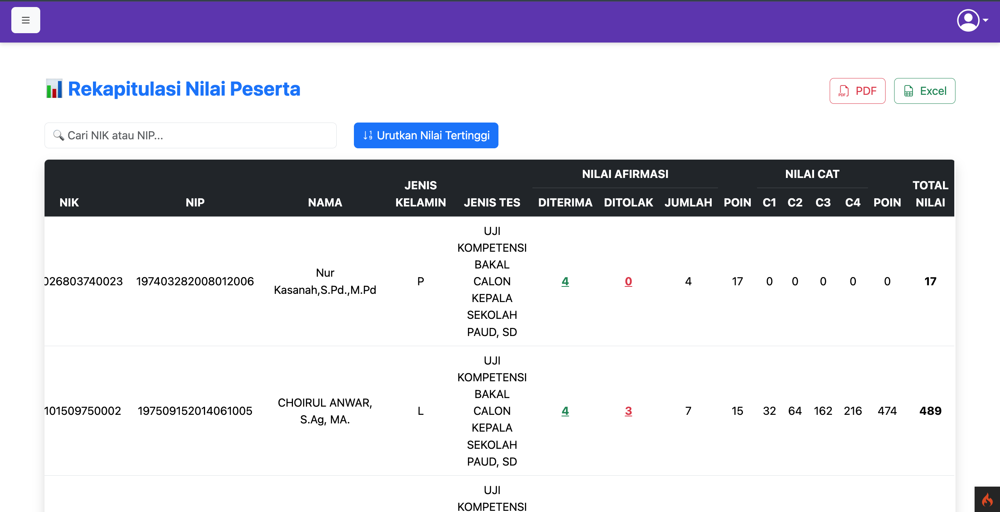